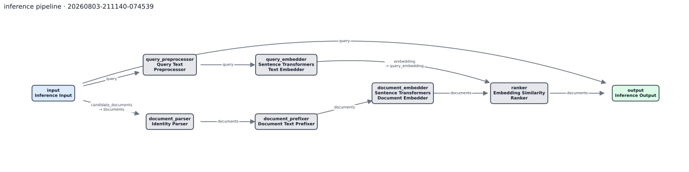

onboarding tutorial
This two-hour tutorial covers project creation, component implementation, Haystack pipeline configuration, the four R4 stages, and a baseline-versus-treatment experiment.
The tutorial produces an index, a prepared input mapping, inference predictions, evaluation metrics, and a project-local experiment with a shared base configuration and explicit run entrypoints.
Repository structure
R4 is a monorepo for retrieval research projects. The repository separates project-specific research, reusable Haystack components, and shared workflow orchestration into different directories.
Research projects are stored under projects/. Each project has its
own Python package, dependency lock, pipeline configuration, experiments, and
generated artifacts. A project can use the shared repository configuration as-is
or add components and pipeline choices for a specific research question.
R4 provides inference and evaluation workflows around Haystack pipelines. The
reusable Haystack components are implemented in
packages/retrieval-components, which is the production-level code
package. Components that are specific to one project, or not expected to be
reused, stay inside that project’s Python package.
packages/retrieval-core contains the stage runners, artifact handling,
evaluation logic, and shared Hydra configuration. It composes the selected
configuration, loads the Haystack pipeline, executes the run, and records the
resolved configuration and manifest beside the run outputs.
R4/ ├── packages/ │ ├── retrieval-components/ reusable production-level Haystack components │ └── retrieval-core/ stage logic, evaluation, artifacts, and shared config └── projects/ └── PROJECT_NAME/ project code, config, experiments, and artifacts
A stage command selects configuration from the experiment, project, and core
config trees. retrieval-core uses the resolved configuration to run a
Haystack pipeline assembled from shared or project-local components. Inference
writes predictions; evaluation reads a specific prediction artifact and writes
metrics.
Step 1: choose OS
R4 supports Windows and Linux. Commands in this tutorial show PowerShell and Bash forms. Choose one platform and use it throughout the tutorial.
Shared configuration templates can be composed and run directly through
packages/retrieval-core; creating a project is not a prerequisite
when a run uses only existing behavior. This tutorial opens a project in the
next step so the component, dependency lock, artifacts, and experiments are
stored together.
Use a Linux remote server when this project will run local transformer models that benefit from a GPU. Windows is fully supported for CPU work and for Windows GPU environments that are already configured. The tutorial shows PowerShell first and Bash second; follow one platform consistently.
Clone R4 and enter the repository
Open PowerShell on Windows or Bash on Linux, then run the matching block.
# Windows · PowerShell
git clone https://github.com/Rotem-BZ/Rotem-Retrieval-Research-Repo.git
Set-Location Rotem-Retrieval-Research-Repo
# Linux · Bash
git clone https://github.com/Rotem-BZ/Rotem-Retrieval-Research-Repo.git
cd Rotem-Retrieval-Research-Repo
source ./bash_aliases.sh
The Linux aliases make build-command and kill-screens
available in that shell. The Windows workflow uses the underlying Python
helper directly.
Optional proof: run shared configuration without a project
From the repository root, the core package can own the active environment and artifact root. The rest of this tutorial uses a generated project instead.
uv sync --project packages/retrieval-core --extra dev
uv run --project packages/retrieval-core stage --helpOpening a new project
A project contains treatment code, project-wide pipeline choices, an independent environment, generated artifacts, and one or more experiments. The project template creates this structure without copying another project’s lockfile.
Set the project template values
Use a short research-area name for the project. The component and pipeline names should describe the initial treatment. The generated component starts as an identity transformation and can be used for a parity test before its implementation is changed.
project_name: a readable research area, such as “Metadata-aware retrieval”.project_slug: the project directory and distribution name.package_name: a valid Python import name.pipeline_name: the project-owned Hydra inference choice.component_class_name: the starter Haystack component.
Create and initialize the project
Run Cookiecutter, answer its prompts, then replace
YOUR_PROJECT_SLUG with the generated directory name.
# Windows · PowerShell
uvx cookiecutter templates/retrieval-project --output-dir projects
Set-Location projects/YOUR_PROJECT_SLUG
uv sync --extra dev
uv run nbstripout --install --attributes ../../.gitattributes
uv run pre-commit install --install-hooks
uv run pytest
# Linux · Bash
uvx cookiecutter templates/retrieval-project --output-dir projects
cd projects/YOUR_PROJECT_SLUG
uv sync --extra dev
uv run nbstripout --install --attributes ../../.gitattributes
uv run pre-commit install --install-hooks
uv run pytest
The project receives its own pyproject.toml and
uv.lock. During monorepo development, retrieval-core
and retrieval-components resolve through editable relative paths,
so shared code changes are immediately visible without surrendering the
project’s dependency boundary.
Review the project structure
projects/YOUR_PROJECT_SLUG/ ├── pyproject.toml + uv.lock project environment ├── src/YOUR_PACKAGE/ │ └── components.py hypothesis-specific behavior ├── configs/pipeline/inference/YOUR_PACKAGE/ │ └── YOUR_PIPELINE.yaml project-owned pipeline choice ├── tests/ component and composition contracts ├── experiments/ controlled comparisons └── artifacts/ immutable stage products
Hypothesis-specific behavior belongs here. A component that has become
generally reusable across projects belongs in
packages/retrieval-components. Stage orchestration and artifact
lifecycle belong in packages/retrieval-core. Keeping those
responsibilities separate prevents experiment-specific behavior from becoming
shared infrastructure before it is reused by another project.
Implementing a project component
The generated component is intentionally an identity transform. Choose a small intervention with explicit input and output sockets. The component implementation skill applies the repository’s placement, configuration, test, and documentation conventions.
Choose the intervention
Keep the first implementation small enough to complete today. The suggestions below are starting points rather than required choices. Another idea is suitable when its contract can be stated explicitly and tested without external services.
- Query transformation: add a prefix, controlled repetition, field-aware phrasing, or deterministic normalization.
- Candidate handling: filter candidates from metadata, preserve a controlled subset, or reorder candidates before ranking.
- Document transformation: clean a field, prepare chunks, or enrich metadata without losing source identity.
- Retrieval composition: introduce fusion, a reranking step, or a small adapter around an existing Haystack component.
- Another intervention: define the smallest component that makes the research question executable.
Before asking an agent to implement anything, record:
- the hypothesis-specific behavior in one precise paragraph;
- constructor settings and defaults;
- input and output socket names and types;
- mutation and failure behavior; and
- two normal cases and one edge case that a focused test can prove.
Use the component implementation skill
implement-new-component applies the repository’s ownership rules,
Haystack v2 socket conventions, serialization shape, Hydra placement, exports,
focused tests, and documentation checks. The prompt must still provide an
explicit research contract and expected test cases.
Open Codex at the repository root and invoke the skill with the contract you just wrote. Adapt this prompt rather than copying an underspecified request.
$implement-new-component
Implement a project-owned Haystack v2 component in
projects/YOUR_PROJECT_SLUG.
Research behavior:
DESCRIBE_THE_INTERVENTION_AND_HYPOTHESIS
Contract:
- Constructor: LIST_SERIALIZABLE_SETTINGS_AND_DEFAULTS
- Input sockets: LIST_NAMES_AND_TYPES
- Output sockets: LIST_NAMES_AND_TYPES
- Mutation/failure behavior: STATE_IT_EXPLICITLY
- Tests: LIST_TWO_NORMAL_CASES_AND_ONE_EDGE_CASE
Wire it into the generated project pipeline. Preserve the existing
project ownership boundary, update focused tests and project docs,
and report the exact verification that was run.
Confirm that the component stayed in the project unless it is intended for
reuse across projects, uses Haystack’s @component API with explicit outputs,
preserves relevant Query or Document fields, and has
no hidden filesystem or network work outside its declared purpose.
Run the component and composition tests
uv run pytest
uv run ruff check .Read the component test and the pipeline-composition test. They should cover the socket-level behavior and verify that the serialized pipeline loads.
Configuring an inference pipeline
R4 uses Hydra as the experiment interface and Haystack as the executable graph. A pipeline combines shared component fragments, project-owned topology, model selections, runtime settings, and a few intentional overrides.
Understand the config search order
One comparison’s base config, run entrypoints, and optional experiment-only choices.
The project pipeline and project-wide defaults.
Shared stages, datasets, components, runtime profiles, models, and pipeline templates.
More specific layers extend or override shared choices without copying the whole configuration tree. An experiment can select your project pipeline; your project pipeline can select shared component fragments; and the resolved config records the fully composed result that actually ran.
Inspect the generated pipeline graph
Open
configs/pipeline/inference/YOUR_PACKAGE/YOUR_PIPELINE.yaml.
Trace every connection from the reserved input component through
your custom component, the shared preprocessing and retrieval components, and
finally the reserved output component.
defaults:
- /selections@_global_.selections: index
- /selections/embedding_model@_global_.selections.embedding_model: ???
- /component/query_preprocessor@components.query_preprocessor: prefix_cleanup
- /component/query_embedder@components.query_embedder: sentence_transformers
- /component/retriever@components.retriever: persisted_in_memory
- _self_
components:
query_transformer:
type: YOUR_PACKAGE.components.YOUR_COMPONENT
connections:
- sender: input.query
receiver: query_transformer.query
- sender: query_transformer.query
receiver: query_preprocessor.query
# ...embedding, retrieval, and output connections continue
??? marks a mandatory value or mandatory config-group choice.
It is not a string and it is not a TODO that the template forgot to fill.
Composition fails until the caller selects a concrete value—for example
selections/embedding_model=e5/small_v2. This keeps consequential
research choices visible at composition time instead of hiding defaults in
component code.
Separate topology from experiment selections
The pipeline file owns component types, serializable initialization settings, and socket connections. The command or experiment base config selects the dataset, runtime, embedding model, index, input mapping, and run identity. A reusable topology should not silently embed the one dataset or artifact ID used during development.
Make one intentional composition change appropriate to your intervention:
add its constructor setting in YAML, adjust a connection, or select another
existing shared component fragment. Then run uv run pytest again.
Running the four stages
The command builder provides an interactive interface for discovering valid Hydra choices. It finds the nearest config tree, asks for mandatory groups, discovers existing immutable dependencies, validates composition, and prints a command for review before execution.
Start build-command
# Windows · PowerShell
uv run python ../../awesome-dev-tools/interactive_build_command.py
# Linux · Bash, after sourcing bash_aliases.sh
build-command
# Linux · direct form also works
uv run python ../../awesome-dev-tools/interactive_build_command.pyChoose the stage requested by each exercise below. Review every selected config and override; the generated command is a transparent artifact, not a hidden execution plan.
From a project it resolves project choices before shared core choices. From an experiment it adds the experiment layer first. It also lists usable input mappings, indexes, and inference runs from the active project, suggests collision-safe IDs, validates Hydra composition, and copies the final command when a clipboard backend is available.
Stage 1 · Prepare a controlled input mapping
Launch the builder, choose prepare_mapping, select
dataset=toy and input_mapping_recipe=dev_tiny, and use
onboarding-dev-tiny as the run ID. Execute the generated command.
The representative command below shows the expected shape.
# Windows · PowerShell
uv run stage prepare_mapping `
dataset=toy `
input_mapping_recipe=dev_tiny `
stage.run_id=onboarding-dev-tiny
# Linux · Bash
uv run stage prepare_mapping \
dataset=toy \
input_mapping_recipe=dev_tiny \
stage.run_id=onboarding-dev-tiny
artifacts/input_mappings/onboarding-dev-tiny/input_mapping.json
fixes the selected query-to-candidate mapping. Its neighboring
meta.json records the preparation recipe. The stage run itself also
receives a resolved config, manifest, result, and log under
artifacts/runs/prepare_mapping/onboarding-dev-tiny/.
Stage 2 · Build an immutable index
Launch the builder again and choose indexing. Select the toy
dataset, CPU runtime, the shared dense document pipeline, and E5 small. Name
the index onboarding-toy-e5 and the stage run
onboarding-indexing.
# Windows · PowerShell
uv run stage indexing `
dataset=toy `
runtime=cpu `
pipeline/indexing@pipeline=dense/documents_in_memory `
selections/embedding_model=e5/small_v2 `
selections.index_id=onboarding-toy-e5 `
stage.run_id=onboarding-indexing
# Linux · Bash
uv run stage indexing \
dataset=toy \
runtime=cpu \
pipeline/indexing@pipeline=dense/documents_in_memory \
selections/embedding_model=e5/small_v2 \
selections.index_id=onboarding-toy-e5 \
stage.run_id=onboarding-indexing
The canonical index is
artifacts/indexes/onboarding-toy-e5/index.json. R4 refuses to
overwrite that path, so the index ID is a stable dependency rather than a
pointer to whichever run happened most recently.
Stage 3 · Run your custom inference pipeline
In the builder, choose inference. Select your project-owned
pipeline, the same toy dataset, CPU runtime, E5 small, the exact index you just
created, and the prepared input mapping. Use
onboarding-treatment-inference as the run ID.
# Windows · PowerShell
uv run stage inference `
dataset=toy `
runtime=cpu `
pipeline/inference@pipeline=YOUR_PACKAGE/YOUR_PIPELINE `
selections/embedding_model=e5/small_v2 `
selections.index_id=onboarding-toy-e5 `
selections.input_mapping=onboarding-dev-tiny `
stage.run_id=onboarding-treatment-inference
# Linux · Bash
uv run stage inference \
dataset=toy \
runtime=cpu \
pipeline/inference@pipeline=YOUR_PACKAGE/YOUR_PIPELINE \
selections/embedding_model=e5/small_v2 \
selections.index_id=onboarding-toy-e5 \
selections.input_mapping=onboarding-dev-tiny \
stage.run_id=onboarding-treatment-inference
artifacts/runs/inference/onboarding-treatment-inference/predictions.json
records ranked documents for each mapped query. The run manifest records the
exact index and input mapping dependencies; resolved_config.yaml
captures the complete pipeline after Hydra composition.
Stage 4 · Evaluate the exact inference run
Choose evaluation in the builder, select the toy dataset, and pick
onboarding-treatment-inference from the discovered inference
runs. Use onboarding-treatment-evaluation as the evaluation run ID.
# Windows · PowerShell
uv run stage evaluation `
dataset=toy `
stage.inference_run_id=onboarding-treatment-inference `
stage.run_id=onboarding-treatment-evaluation
# Linux · Bash
uv run stage evaluation \
dataset=toy \
stage.inference_run_id=onboarding-treatment-inference \
stage.run_id=onboarding-treatment-evaluation
artifacts/runs/evaluation/onboarding-treatment-evaluation/metrics.json
contains the configured aggregate metrics. Evaluation resolves predictions
from the named inference manifest, which makes the dependency explicit and
rejects ambiguous “latest run” behavior.
artifacts/input_mappings/onboarding-dev-tiny/input_mapping.json
artifacts/indexes/onboarding-toy-e5/index.json
artifacts/runs/inference/onboarding-treatment-inference/predictions.json
artifacts/runs/evaluation/onboarding-treatment-evaluation/metrics.json
If a stage fails, diagnose composition and immutability first
- A remaining
???means a required value or config group was not selected. - A missing index or mapping requires an exact completed artifact ID; prefix matching and implicit “latest” resolution are intentionally unsupported.
- An existing run or index directory will not be overwritten. Choose a new ID and preserve the old evidence.
- A dense pipeline on a machine without CUDA should use
runtime=cpu. - A command run from the wrong directory changes the default project root. Return to the generated project before building commands.
Creating an experiment
An experiment workspace contains a concise experiment card, one complete shared base config, and minimal run entrypoints. Use it to record a comparison after developing the component and pipeline with direct commands.
Scaffold the experiment
Run the experiment Cookiecutter. Choose the toy dataset, E5 small, the exact
onboarding-toy-e5 index, the shared
retrieve/dense_in_memory baseline, and your
YOUR_PACKAGE/YOUR_PIPELINE treatment.
uvx cookiecutter ../../templates/retrieval-experiment --output-dir experimentsexperiments/YOUR_EXPERIMENT_SLUG/ ├── experiment.md description and hypothesis ├── analysis.ipynb prediction-level analysis └── configs/ ├── base-experiment-configs/inference.yaml everything shared └── runs/ ├── baseline.yaml inherits the base unchanged └── treatment.yaml overrides only the pipeline
Make the shared inputs explicit
Open the generated base inference config. Confirm the dataset, runtime, embedding model, baseline pipeline, exact index ID, and retrieval depth. Add the prepared input mapping so both arms consume the same controlled candidates.
# @package _global_
defaults:
- /stages/inference
- override /dataset: toy
- override /pipeline/inference@pipeline: retrieve/dense_in_memory
- override /selections/embedding_model@selections.embedding_model: e5/small_v2
- override /runtime: cpu
- _self_
selections:
index_id: onboarding-toy-e5
input_mapping: onboarding-dev-tiny
pipeline:
components:
retriever:
init_parameters:
top_k: 100Both entrypoints inherit the same data, model, artifact, runtime, and retrieval depth. The treatment run changes only the selected pipeline. That makes the intended comparison readable in version control and makes accidental confounders easier to find in the resolved configs.
Complete the experiment card and launch both runs
Replace the generated experiment-card placeholders with the intervention and hypothesis you wrote earlier. Then execute both explicit entrypoints. Use the same command form on either platform; the paths use forward slashes.
# Windows · PowerShell
uv run stage inference `
--entrypoint experiments/YOUR_EXPERIMENT_SLUG/configs/runs/baseline.yaml
uv run stage inference `
--entrypoint experiments/YOUR_EXPERIMENT_SLUG/configs/runs/treatment.yaml
# Linux · Bash
uv run stage inference \
--entrypoint experiments/YOUR_EXPERIMENT_SLUG/configs/runs/baseline.yaml
uv run stage inference \
--entrypoint experiments/YOUR_EXPERIMENT_SLUG/configs/runs/treatment.yaml
The entrypoint path identifies the project and experiment. R4 derives stable
run IDs from the experiment and run filenames, while the generated YAML remains
a small declarative layer suitable for Git. Heavy outputs continue to live
below artifacts/runs/.
Checking reproducibility
Check the versioned experiment files, resolved stage configuration, immutable artifacts, and project dependency boundary before handing the work to another team member.
Review the project and run outputs
Reference only · other agent skills
create-experiment-cardcreates or reduces a concise experiment description and explicit hypothesis.generate-experiment-reportproduces an evidence-led report from completed configs, manifests, predictions, and metrics.implement-new-stageadds a new artifact-producing workflow stage when component behavior is not the right abstraction.
Reference only · repository utilities and dev tools
interactive_create_run.pywrites one minimal run entrypoint inheriting an experiment base config.visualize_pipeline.pyrenders the Haystack graph recorded in a run’s resolved config.interactive_run_in_parallel_screens.pylaunches selected experiment runs through GNU Screen on Linux.run_in_screen.pylaunches one detached Linux command with a persistent session log.kill-screenscloses GNU Screen sessions owned by the current Linux user.retrieval_core.utilscontains the shared artifact, configuration, evaluation, I/O, logging, pipeline, hashing, and time helpers used by core orchestration.
See awesome-dev-tools/README.md and the package documentation when a later task requires one of these tools.
Visualizing a resolved pipeline
visualize_pipeline.py reads the pipeline stored in a stage run’s
resolved_config.yaml and renders its component graph. This can be used
to review the final topology after Hydra composition.

20260803-211140-074539. Open the
image to inspect the published SVG at full size.
Run the command from projects/query-repetition. By default, the tool
writes the SVG below artifacts/visualizations/pipelines/ using the
stage name and run ID from the resolved configuration.
# Windows · PowerShell
uv run python ../../awesome-dev-tools/visualize_pipeline.py `
artifacts/runs/inference/20260803-211140-074539/resolved_config.yaml
# Linux · Bash
uv run python ../../awesome-dev-tools/visualize_pipeline.py \
artifacts/runs/inference/20260803-211140-074539/resolved_config.yamlFiles and artifacts created by the tutorial
The completed project contains a component, a pipeline configuration, a dependency lock, four stage artifacts, and an experiment with baseline and treatment entrypoints.
Keep the project code, tests, lockfile, experiment card, base config, and run entrypoints in Git. Treat the artifact manifests and resolved configs as the evidence that connects those declarations to the index, mapping, predictions, and evaluation results you produced.